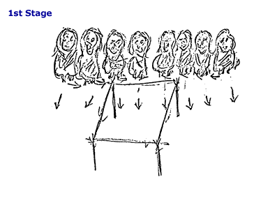

|
As the Four Winds come moaning in with its huge fan penetrating
the surroundings, it seems to chant a prayer to warn us, to be ever alert.
For now the breeze has a tingling effect as nature changes, and the dew
is moulded into frost, giving some of Mother Earth's beings a coated radiance.
The leaves begin to fall, and nature undergoes a great change. The medicine
men have made contact with the Great-Mystery, and have been warned to
cleanse their bodies, and drive out all evil spirits that surround and
disturb their environment.
|
|
|
Dance Steps
|
|
|
 |
See the individual dance steps: |
| See the backdrop | |